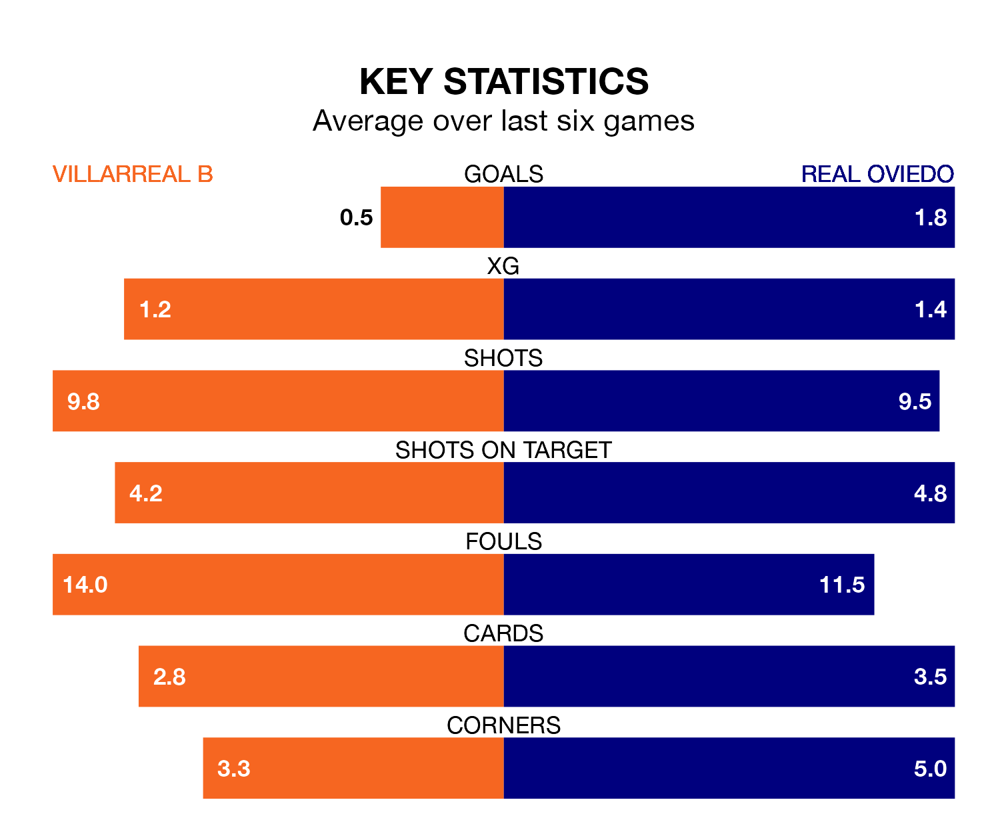

Villarreal B host Real Oviedo on Thursday at Estadio de la Cerámica in the Segunda División.
In their last league match, on Monday, Villarreal B beat Real Valladolid 1-0 at home, with their goal scored by Álex Forés Mendoza.
Oviedo also won, 3-2 at home against Elche CF on Friday, with Borja Bastón, Francisco Fumaça Mascarenhas Costa Pessoa and Francisco Sebastián Moyano Jiménez on the scoresheet.
With Leo Román between the sticks, Oviedo can rely on one of the league's safest pair of hands. He has kept eight clean sheets in his 20 appearances this season, and only two other 'keepers – Sporting Gijón's Orlando Rubén Yáñez Alabart and CD Tenerife's Juan Soriano Oropesa – have been able to prevent the opposition scoring on more occasions in the Segunda División.
In Villarreal B's net, Iker Álvarez has three clean sheets in 14 games. He has conceded a goal every 70 minutes, 80% more often than the 129 minutes between goals for Román Riquelme.
The hosts are 17th in the table after 20 games, of which they have won six and drawn five, earning 23 points.
Real Oviedo are five places ahead of Villarreal B in 12th, with seven wins and eight draws putting them on 29 points.
With 22 goals in 20 games so far this season, Villarreal B are scoring at below the league average rate with 1.1 goals per game. And they are conceding more than average, letting in 29 goals at a rate of 1.4 per game.
The away side are also below average scorers, with 1.1 goals per game, compared to a league average of 1.2. They have conceded 0.8 goals per game.
The home team are in mixed form in the Segunda División, with three wins and a draw from their last six games.
With three wins and two draws over that period, Oviedo's form is slightly better – they have taken 11 points from 18, compared to Villarreal B's 10.
Thursday's match will be refereed by Dámaso Arcediano Monescillo, who has taken charge of 10 Segunda División games so far this season, issuing three red cards and booking 42 players. He has not awarded any penalties.
The last Oviedo game Arcediano Monescillo refereed was the 1-0 loss away at Burgos CF on August 26. He is yet to oversee a match featuring Villarreal B this season.
Updated: 15:16, 21/12/23